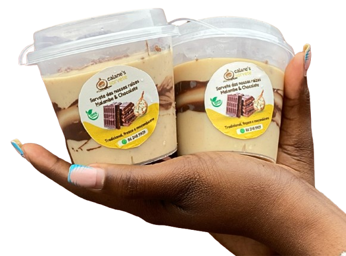
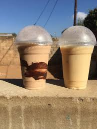

Sorvete Natural de Malambe com sabores!
Descubra o sorvete de malambe em Chocolate e Morango. Fresco, artesanal e naturalmente saboroso.
Apenas 50MT por pote.

Sobre o Nosso Sorvete
O nosso sorvete de malambe é feito para quem ama sabor de verdade. Produzido de forma artesanal e 100% natural, ele combina o malambe com os sabores que todos adoram: Chocolate e Morango.
Cada pote é preparado com cuidado, frescura e qualidade premium — um produto exclusivo que se destaca no mercado.
Se você procura algo delicioso, diferente e realmente especial… encontrou.
